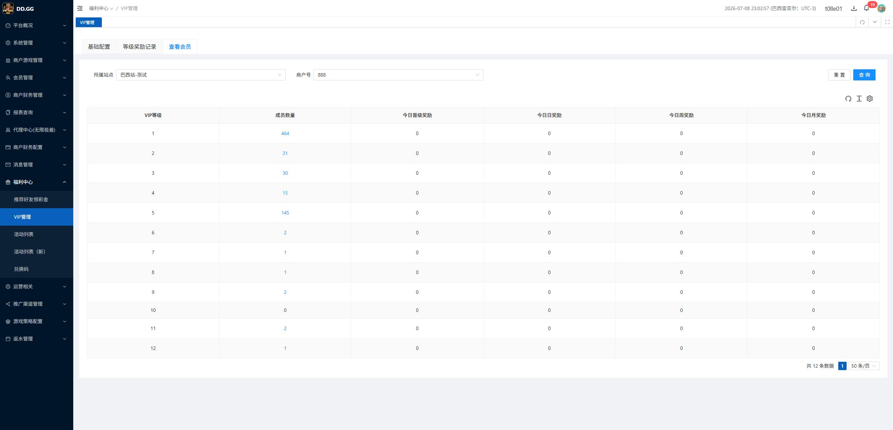

VIP管理 / 查看会员 / 成员数量 - BUG-001 回归报告
回归范围
| 项目 | 口径 | 结果 |
|---|---|---|
| BUG-001 | 成员数量为 0 的 VIP 行不应呈现蓝色 link / pointer / 可点击按钮样式。 | 通过：VIP10 成员数量 0 为普通 TD，无 button、无 anchor，颜色为 rgba(0, 0, 0, 0.85)，cursor 为 auto。 |
| BUG-001 | 点击 0 不应打开成员明细/查看会员弹框。 | 通过：点击 VIP10 的 0 后未出现成员明细弹框。 |
| Q-001 | VIP0 对应 grade=1、VIP1 对应 grade=2，弹框展示 VIP 名称、列表展示 grade 数字。 | 产品/后端接受现状，本次不作为 bug 回归。 |
执行证据
| 证据 | 观察 |
|---|---|
 |
查看会员列表显示 VIP1-VIP12，VIP10 成员数量为 0。 |
 |
点击前 DOM 观察：VIP10 的 0 为普通 TD，无 button / a，颜色黑色，cursor 为 auto。 |
 |
点击 VIP10 的 0 后，页面仍停留在查看会员列表，未出现成员明细弹框。 |
用例结果
| 用例 | 检查点 | 实际结果 | 状态 |
|---|---|---|---|
| REG-001 | 0 成员数量样式 | VIP10 成员数量 0 无 link/button，非蓝色，cursor auto。 | 通过 |
| REG-002 | 0 成员数量点击 | 点击 VIP10 的 0 后未打开成员明细/查看会员弹框。 | 通过 |
| REG-003 | Q-001 回归口径 | 按产品/后端确认，VIP 名称和 grade 数字展示差异为接受口径。 | 非 bug |
残余风险
| 风险 | 说明 |
|---|---|
| 仅覆盖当前 0 数据行 | 本次页面上可见的 0 成员数量行是 VIP10；若后续其他 VIP 等级出现 0，建议以同一规则纳入常规回归。 |
| 未做数据变更 | 本次遵守只读边界，未制造新的 0 成员数量测试数据。 |